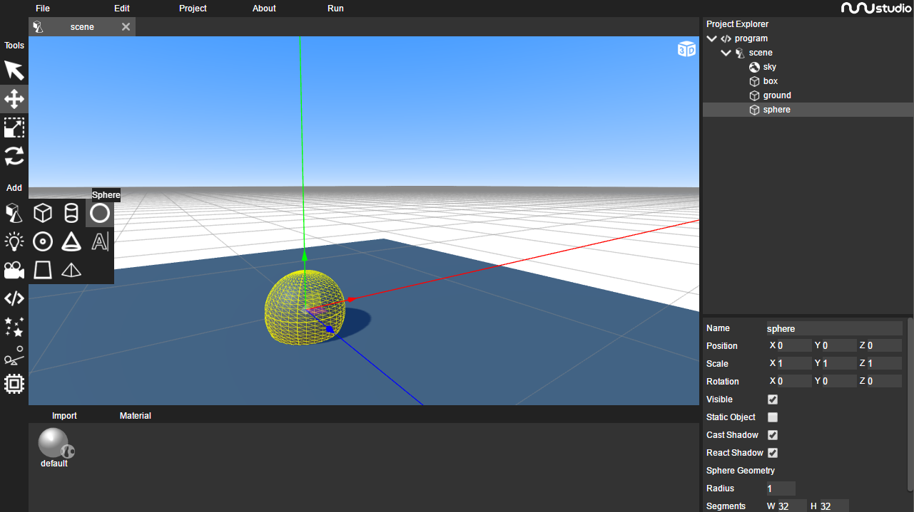

The nunuStudio editor is where nunu applications are developed it provides tools for creating and editing objects inside the 3D world. If you have ever worked with another similar frameworks (unity, playcanvas, godot, etc) or with 3D modeling software (blender, maya, cinema4d, etc) some of the concepts bellow might be already familiar to you.
Objects are organized in a tree structure (visible on the red area bellow), each object has childrens, that inherit the parent object position, scale and rotation. If a parent object is moved the children object is moved with it.
Objects can be selected on the object explorer with mouse left click, when a object is selected the object panel (in blue), is filled with data regarding that object. In the object panel its possible to manually change every attribute of an object (position, name, color, etc).

The left side of the window is used to choose tools and add objects to the scene, tools are used to interact direcly using the mouse with objects in the 3D space, the following tools are available:
Selection tool, selects objects with mouse left click, objects can also be selected by double clicking on then (even if the selection tool is not active)
Move tool, used to move objects
Resize tool, used to resize objects
Rotate tool, used to rotate objects
Bellow the tool selection zone, there is the object add zone, where its possible to select and add objects to the scene currently selected on the object explorer. When dragging the mouse over each option a new box appears showing objects for each category available.
The resource explorer zone (in green), is used to manage all available resources (images, videos, fonts, etc), import new resources into the project (clicking on the import menu or simply by dragging them into the resource explorer) or even export resources from the project to the host system.
The mouse is used to move the camera inside the editor area (gray color)
To rotate the camera press the mouse left button and move the mouse around (the camera moves similarly similarly to how a camera moves in a FPS game).
To move the camera press the mouse right button and move the mouse
To move vertically press the mouse middle button and move the mouse up and down
To approach the camera use the mouse scrolling wheel, or pinch with your fingers if you are using a trackpad.
To add your first object to the scene (lets use as example a sphere) move the mouse to the 5th icon in left side bar, and select the sphere icon using the mouse left button.
Now select the added object with the selection tool and after that choose the move tool and try to move the added object aroud.
To test the program press the run button on the top bar, or press the F5 key, to stop it press the stop button or press the F5 again.